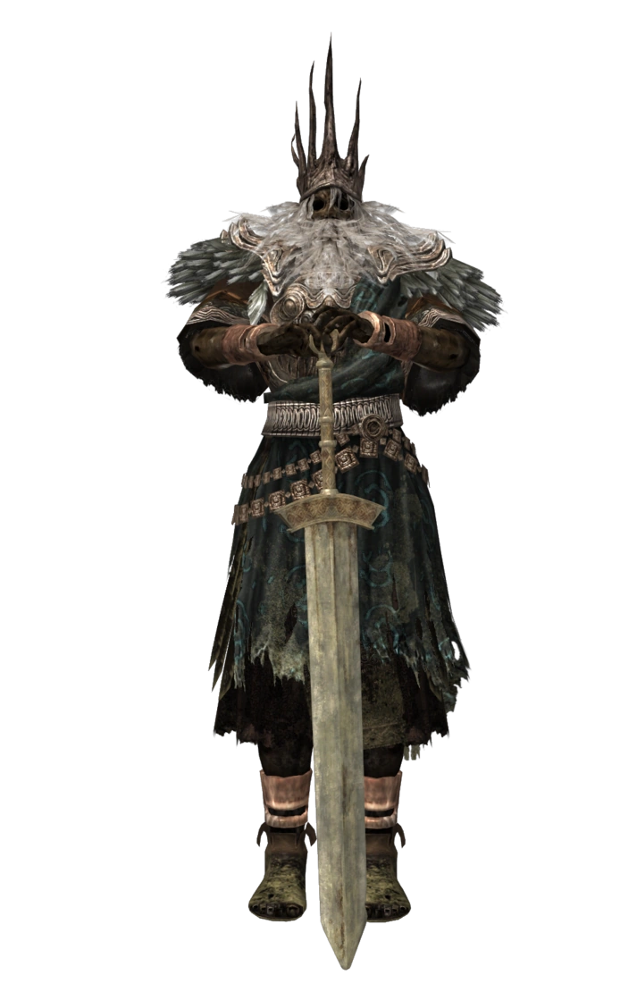

Gwyn - Lord Of Cinder (demo page)

Gwyn, the Lord of Cinder, stands as an indomitable figure amidst the annals of legend and lore.
With an aura that burns brighter than the sun itself, he embodies the epitome of power, majesty,
and divine authority. As the ruler of Lordran, the crumbling kingdom of gods, Gwyn's legacy
reverberates through the ages, casting an everlasting shadow upon the world.
Clad in resplendent armor that gleams with ethereal radiance, Gwyn possesses a regal countenance befitting a deity. His long, flowing hair dances with crackling embers, mirroring the untamed fire that courses through his veins. With every step, his mighty spear, imbued with the primal essence of lightning, leaves trails of awe and reverence in its wake.
Yet, it is not merely his physical prowess that defines Gwyn, but his profound role in shaping the destiny of Lordran. In ages long past, he sacrificed himself to kindle the First Flame, ushering in the Age of Fire and igniting the cycle of life, death, and rebirth. The embers of his soul burn eternally, sustaining the fading flame that maintains the fragile balance of the world.
Gwyn's rule embodies both benevolence and authoritarian might. His divine authority demands unwavering loyalty, yet he is not without compassion, having raised mighty knights and embraced a paternal role in safeguarding his kingdom. With his elite Four Knights by his side, renowned for their valor and unwavering loyalty, he strove to protect Lordran from the encroaching darkness that threatened to engulf it.
Yet, despite his grandeur, Gwyn's legacy is not devoid of tragedy. As the flame wanes and the Age of Fire reaches its twilight, his once-majestic visage reflects a weary sorrow. A poignant reminder of the ephemeral nature of power and the inevitable march of time.
Gwyn, the Lord of Cinder, remains an indelible symbol of divine might and the complex interplay between sacrifice and the burdens of kingship. His story echoes throughout the realms of fantasy, immortalized in tales of valor, conflict, and the eternal struggle between light and dark.
Clad in resplendent armor that gleams with ethereal radiance, Gwyn possesses a regal countenance befitting a deity. His long, flowing hair dances with crackling embers, mirroring the untamed fire that courses through his veins. With every step, his mighty spear, imbued with the primal essence of lightning, leaves trails of awe and reverence in its wake.
Yet, it is not merely his physical prowess that defines Gwyn, but his profound role in shaping the destiny of Lordran. In ages long past, he sacrificed himself to kindle the First Flame, ushering in the Age of Fire and igniting the cycle of life, death, and rebirth. The embers of his soul burn eternally, sustaining the fading flame that maintains the fragile balance of the world.
Gwyn's rule embodies both benevolence and authoritarian might. His divine authority demands unwavering loyalty, yet he is not without compassion, having raised mighty knights and embraced a paternal role in safeguarding his kingdom. With his elite Four Knights by his side, renowned for their valor and unwavering loyalty, he strove to protect Lordran from the encroaching darkness that threatened to engulf it.
Yet, despite his grandeur, Gwyn's legacy is not devoid of tragedy. As the flame wanes and the Age of Fire reaches its twilight, his once-majestic visage reflects a weary sorrow. A poignant reminder of the ephemeral nature of power and the inevitable march of time.
Gwyn, the Lord of Cinder, remains an indelible symbol of divine might and the complex interplay between sacrifice and the burdens of kingship. His story echoes throughout the realms of fantasy, immortalized in tales of valor, conflict, and the eternal struggle between light and dark.